For process Director v5.32 and higher, the Condition Builder will not, when evaluating form fields, include fields that have no value, like Embedded Sections, or labels.
For process Director v5.32 and higher, the Condition Builder will not, when evaluating form fields, include fields that have no value, like Embedded Sections, or labels.Process Director includes a Condition Builder that enables you to create conditions to test nearly any value you desire. You will see the Condition Builder in many different places, such as when to make a form field enabled or hidden, or what value to return from a Business Rule. The Condition Builder is usually invoked by an action link that is labeled "Click to create condition...". Anywhere you see this link, you can open the Condition Builder by clicking on it.
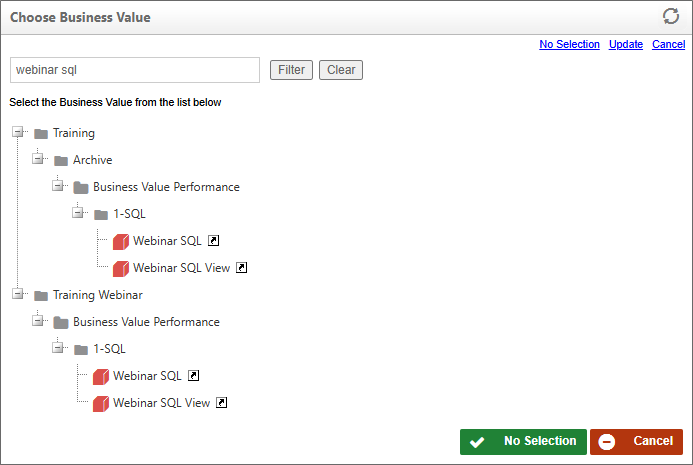
Adding a condition to a specific option makes it easy to set a value or perform an action based on your preference. Conditions are true or false statements that are evaluated in order to determine an appropriate response.
When the Condition Builder has been invoked, you may add a condition by selecting the Add Condition button .
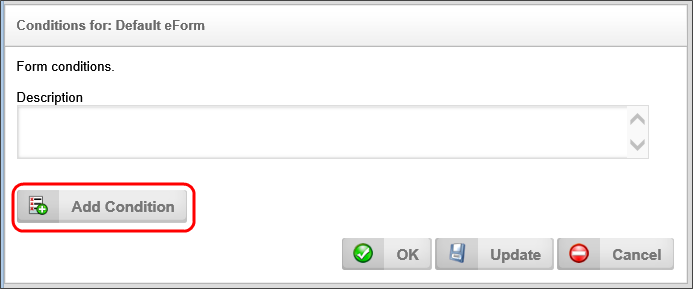
Once you click the Add Condition button, the first conditions row will appear, and the first control in the row (we refer to this as the “left hand side” of the condition) is a Picker control that will display the text, “Form Field” in most contexts. You will use this Picker control to set the variable that you will evaluate for the condition. The middle control is a selector that enables you to pick the method for comparing the system variable to a desired value. We refer to this as the operator. Finally, there is, for most variable types, a third field, which is the desired value to which you wish to compare the system variable. We refer to this as the Right hand side" of the condition.
Not all system variables will have a desired, or right hand side value. For instance, boolean variables only return true or false. As such, they are not compared to a desired value, merely evaluated to determine if they are true or false.
Click the Picker Control’s Build button to reveal the Choose System Variable dialog box. This dialog box contains all of the system variables that are available for evaluation.
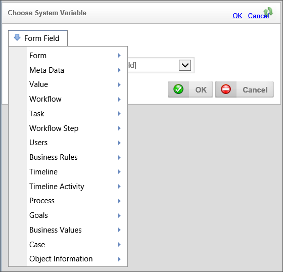
All of the system variables are organized in a dropdown menu that divides the system variables into a number of categories, as shown above. Use the dropdown menu to select the appropriate system variable. Once you have selected the system variable, click the OK button to close the dialog box and set the system variable in the condition row. Please see the System Variables Reference Guide for a description of all the possible system variables that may appear in the dropdown. This dropdown menu is context-sensitive, so, depending on where you are using the Condition Builder, different options will appear that are relevant to the selection or filtering operation you are conducting.
For process Director v5.32 and higher, the Condition Builder will not, when evaluating form fields, include fields that have no value, like Embedded Sections, or labels.
Once the variable has been selected, you must choose an operator for the variable, i.e., the method we will use to compare the variable to the desired value. A number of operators are available, and the type of available operators will depend on the type of system variable you select. A Boolean system variable, for instance, will only allow you to select whether the variable is true or false, while a string variable will provide a much wider array of choices.
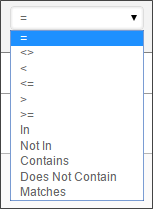
In general, the following operators are available:
This operator requires that the system variable and the desired value match exactly.
This operator requires that the system variable and the desired value do not match.
A search for fields that are NOT empty can be performed using this operator with the syntax :
Value <> ""
This operator requires that the value of the system variable be less than that of the desired value.
This operator requires that the value of the system variable be less than or equal to that of the desired value.
This operator requires that the value of the system variable be greater than that of the desired value.
This operator requires that the value of the system variable be greater than or equal to that of the desired value.
This option is primarily designed to match a value to a list of values. For instance, of the left side of the condition contains a user, and the right side of the condition contains user group, this operator will determine if the user is contained in the group. Similarly, if the value on the left is a string and the value on the right is a comma-separated list of values, the In operator means “in that list”. If the value is determined to be in the list of values, this operator will return "true"
This option is also primarily designed to match a value to a list of values, though, in this case, it returns "true" if the value is not in the list.
 A User filter on a knowledge view will now support "user IN/NOT (group or user list)". If it is a "user IN group list", the filter will return True if the user is in ANY of the groups. If you have a "user NOT IN group list" filter, then the filter will return true if the user is NOT IN ANY of the groups.
A User filter on a knowledge view will now support "user IN/NOT (group or user list)". If it is a "user IN group list", the filter will return True if the user is in ANY of the groups. If you have a "user NOT IN group list" filter, then the filter will return true if the user is NOT IN ANY of the groups.
The string value of the System Variable is contained in the string value of the desired value. For instance, a desired value of "Rejected" would contain a system variable with the string value of "Reject".
The string value of the System Variable is not contained in the string value of the desired value.
This operator works similarly to the Contains operator, but supports the ability to use AND and OR operators in the filter string. The filter string can also contain double quotes to force the search on that entire character string. If there is no operator between strings, or a ",", these will be treated as "AND". Additionally, the Matches operator supports a Regular Expression (REGEX) value for the desired value.
This operator is applicable only to date/time values. In enables you to specify the lower bound of a date range.
This operator is applicable only to date/time values. In enables you to specify the upper bound of a date range.
For Process Director v5.21 and higher, full text search operators enable you to use nonspecific or "fuzzy" search terms to return a larger set of potential matches for a search term. Please remember that full-text searching can be resource-intensive, may take a long time, and may return an unexpectedly large set of search results, depending on the precision of your search terms. There is a custom variable, fCONTAINSUseValueSearchOnly, that can speed up full-text searching, though at the cost of some search accuracy.
To implement full-text searching, you must enable it on your system by performing the following process:
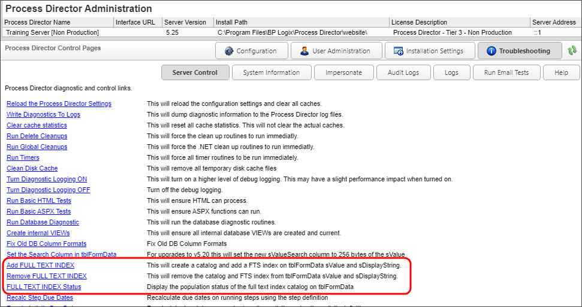
There are some restrictions that you must keep in mind when using full-text search operations.
You can turn the stoplist off on SQL Server by using the following SQL Command in the SQL Server Management Console:ALTER FULLTEXT INDEX ON tblFormData SET STOPLIST = OFF
To turn the stoplist ON with the default of "system" use this SQL command:ALTER FULLTEXT INDEX ON tblFormData SET STOPLIST = SYSTEM
Once full-text searching is enabled, the following operators will be come available when appropriate.
This full text search operator enables you to find text strings that begin with the specified search term. For instance, a Starts With search for "ham" will return "hammer", "hamfisted", "Hamlet", "Hamilton", hamburger, etc.
This full text search operator enables you to perform a search of text that returns terms that are lexically similar terms to the search term. For instance, a search for "check" will return items that contain the lexical matches such as "Checks", "Checked", "Checking", "Checker", etc.
Once the operator has been selected, you must provide the desired value on the right hand side of the Condition Row, to which the System Variable will be compared. The desired value can be derived from Process Director, or manually entered by the user. A dropdown menu is available to select the type of desired value. Different data types will present different items in the dropdown menu, each of which is appropriate to the data type you are comparing.
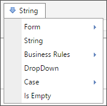
Depending on which item you select from the dropdown menu, the appropriate selection or input method, if necessary, will be displayed in the condition builder to enable you to enter the appropriate comparison value. For instance, if you select a "String" as the desired comparison value, a text box will be provided into which you can type the string value you desire.
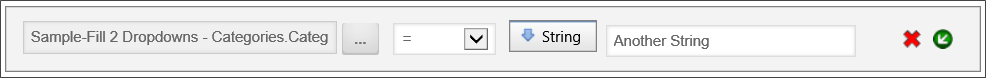
In the example above, the condition requires that the value of the Text1 form field equal the desired string value, "Approved".
Once a condition has been created, you may remove a condition by selecting the red “x” next to the condition to be removed.
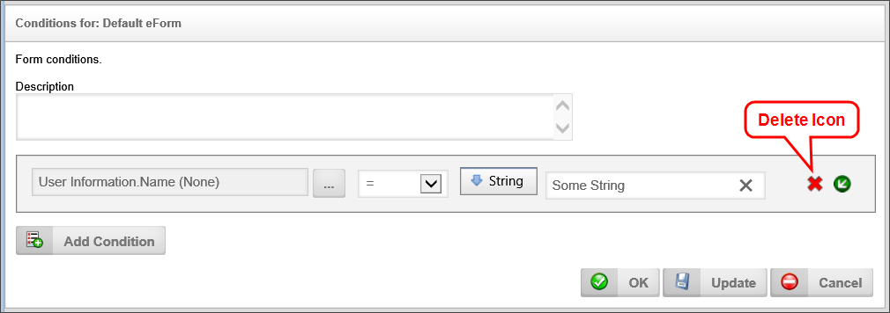
You may also select the green arrow icon to insert a new condition to be included in that condition.
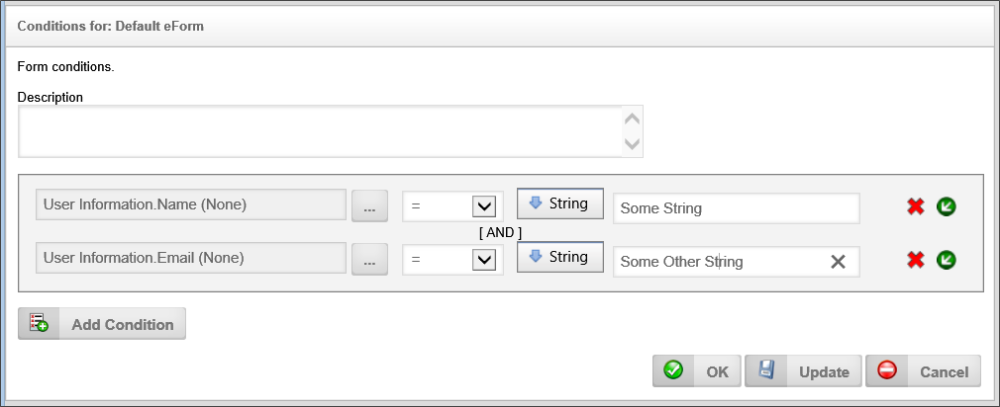
You may also select the Add Condition button to insert another condition but to use it as an OR condition.
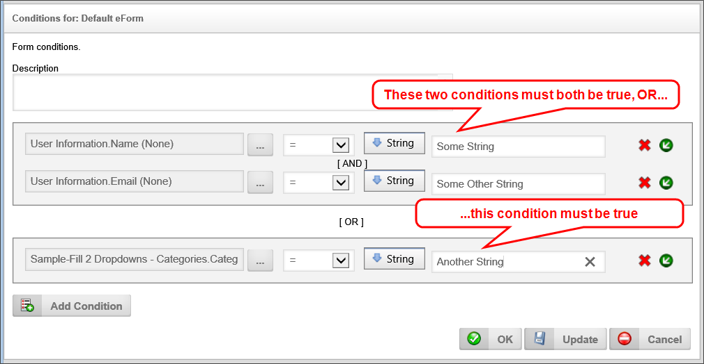
Once you have set your conditions for your option you can save it by clicking the OK or the Update buttons.
Validation filter conditions that use Array fields on a Form can be complex, and may not work in the way you expect, because various filter conditions operate differently, depending on whether you are trying to filter based on a single (scalar) value or an array (column) value, and whether the value is used on the left or right side of the operator in the Condition Builder. The various condition scenarios are described in the table below.
| LEFT SIDE | RIGHT SIDE |
COMPARISON BEHAVIOR |
EXAMPLE |
||||||||||||||||||
|---|---|---|---|---|---|---|---|---|---|---|---|---|---|---|---|---|---|---|---|---|---|
| Scalar | Scalar | Simple comparison of the two values. For instance, if you wanted to search a Form Field named favoriteColor for the color Blue, the comparison would be:
If the favoriteColor field contains the value "Blue" the condition will return "true". |
Field1="Value" | ||||||||||||||||||
| Column | Scalar |
The column value on the left side of the operator is returned as a comma-separated list, and the condition will evaluate to see if the scalar value on the right side is contained in the list. This condition will return "true" if the scalar value matches the condition for any row in the array column. For instance, let's assume we have an array column named primaryColors, containing the following values: Row [1]: red Row [2]: blue Row [3]: yellow Any of the following comparisons will return "true":
|
Column1=Field1 Column1<=Field1 |
||||||||||||||||||
| Scalar | Column |
The column value on the right side of the operator is returned as a comma-separated list, and the condition will evaluate to see if the scalar value on the left side is contained in the list. This condition will return 'true" if a matching value is found. For instance, let's assume we have an array column named primaryColors, containing the following values: Row [1]: red Row [2]: blue Row [3]: yellow Any of the following comparisons will return "true":
|
Field1 IN Column1 | ||||||||||||||||||
| Column | Column |
Each row in the column is compared with the corresponding column in the same row. This condition will return "true" if any row comparison matches the operator. For instance, let's assume we have two array columns, primaryColors and berryColors, containing the following values: Array column “primaryColors” Row [1]: red Row [2]: blue Row [3]: yellow Array column “berryColors” Row [1]: red Row [2]: black Row [3]: blue The comparison condition would be:
Since Row[1] matches the condition, the condition will return true. |
Column1=Column2 |
In Process Director v5.1 and higher, a client side validation function allows conditional processing on form fields to occur in the client browser without having to make the form fields into event fields, and reposting the form when the fields change.
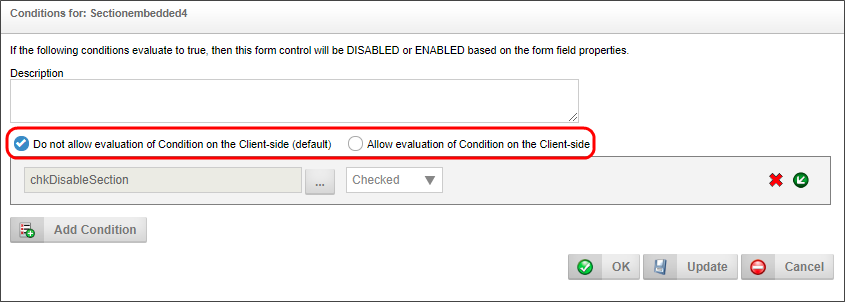
These conditions are used to control the display/hidden “when”, enabled/disabled “when”, and required/not required “when” settings in the properties displayed from the Form Controls tab of the form definition.
When this client side condition flag is enabled, system variables will only be evaluated once on the server when the page is displayed or an event occurs. Form fields, however, will always use to most current form data on the visible form when evaluating the condition, because the evaluation will take place in the client browser, and will not require the form to be reposted to the server to evaluate the form fields.
By default, the traditional server-side evaluation method will be the default evaluation method for conditions, unless you specifically choose to use client validation.
As of Process Director v5.1, only the following control types can be used for client-side conditional processing, both for Showing/Hiding and for the querying of live data: